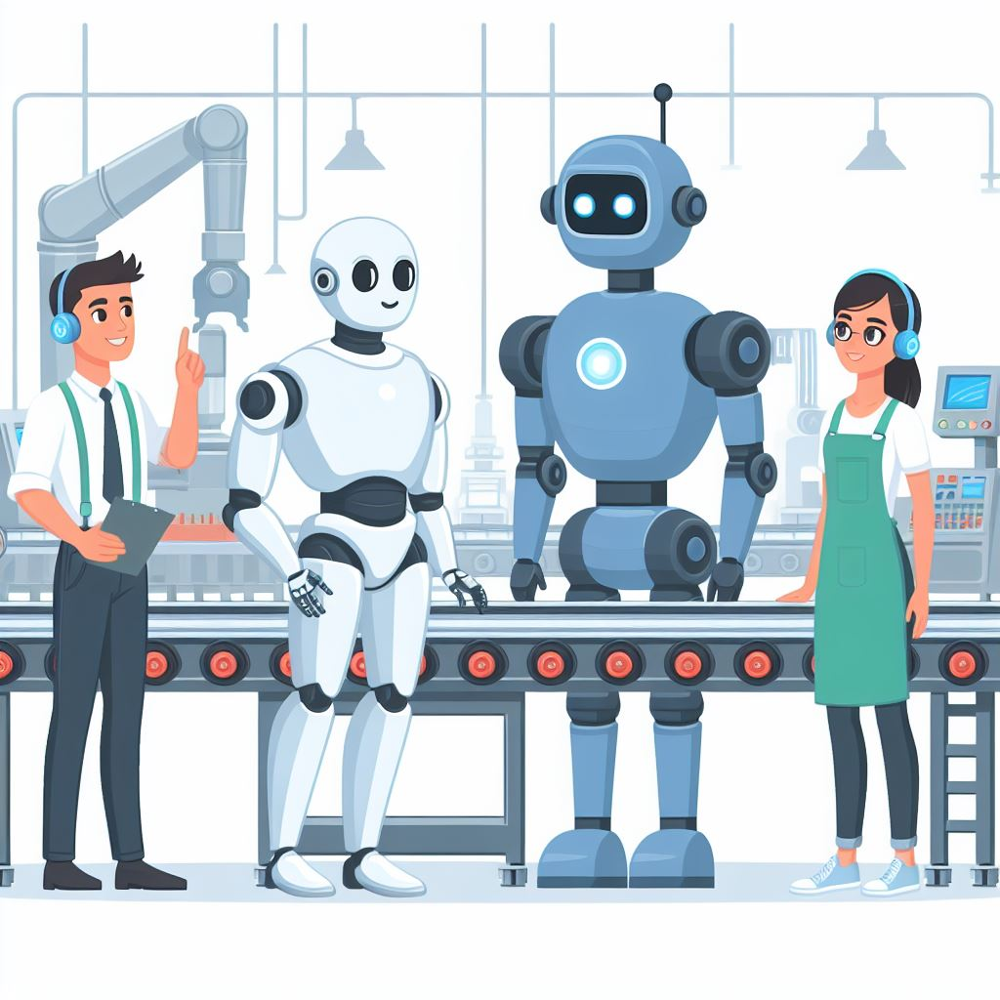
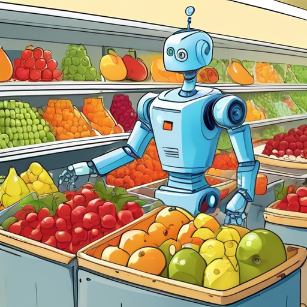
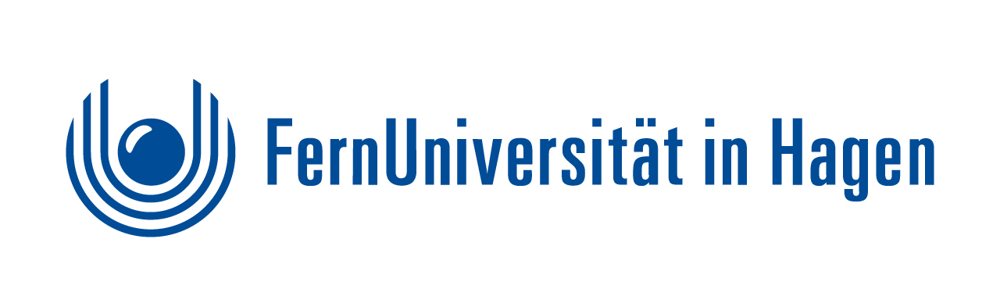

While my background is in management sciences, I am have shifted
towards research in artificial intelligence due to my fascination for the inherent magic of machine learning algorithms such as
AlphaGo.
This shift is also reflected in
my PhD projects, which aims to apply reinforcement
learning methods to supply chain management problems and to study user behavior of generative machine learning models.
I am currently looking to take the next step towards a research career in artificial intelligence.
My research aims at developing autonomous intelligent agents that exhibit superhuman-performance
on an open-ended range of tasks. Specifically, my goals are twofold: Training generalist agents
to pave the way towards artificial general intelligence and
discovering new and transformative applications of machine learning that solve so-called root node problems.
I approach these challenges by designing un- and self-supervised algorithms that learn complex behaviors from scratch.
Specific research areas I'm interested in are:
Open-Ended Reinforcement Learning: Training agents which are able to
solve diverse tasks beyond those seen during training.
Human-In-The-Loop Learning: By involving humans in the learning process,
agents can become capable of effectively interacting with humans or acting with regards
to their preferences despite complex human behavior.
Unsupervised Exploration: The question how to intrinsically motivate
agents to effectively explore their environment remains highly relevant.
Automated Theorem Proving: Given the rapid advances in the capabilities of
foundation models, transformative applications to mathematics and theorem proving in
particular seems within reach.
This is an ovewiew of selected ongoing research projects and other past projects.

Reinforcement Learning-based Inventory Optimization with Diverse Supply Chain Collaborators
Ongoing
In inventory management, policies directly depend on the ordering behavior of down- and upstream agents. These supply chain collaborators
may be humans, heuristics, learning algorithms or mixtures of the above. Yet, reinforcement learning for inventory optimization has so far
primarily been applied to cases where all collaborators are simple heuristics. Settings with human collaborators are especially under-researched.
We propose a method to learn optimal policies irrespective of the types of collaborators. Through a human-in-the-loop reinforcement learning approach
we enable the learner to effectively collaborate with potentially non-rational human collaborators.
Demand Distribution-Invariant Optimal Inventory Control Through Reinforcement Learning
Ongoing
In this project, we aim to bring reinforcement learning closer to a real-world application in inventory management.
We specifically train the model to be robust against unforeseeable changes in demand. We do so by using automatic domain randomization to enable
zero-shot generalization to unseen real-world demand series.
Learning to Program Under the Presence of AI Assistants
Ongoing
Large language models have proven to be very effective in generating code for user-specified
tasks. We explore how the access to such models affects students learning to program.
Effectively Incorporating Generative Image Models in Product Design Processes
Ongoing
The emergence of highly capable image generation models such as diffusion models leads to a range of questions and challenges
for existing design processes. In this project, we investigate the effects of augmenting human workers with such generative models
in design tasks.
In this computer vision competition, the goal was to identify marine mammals among a total of over 15,000 individuums. Our proposed solution uses an
EfficientNet backbone with an ArcFace head. For inference, we compute nearest neighbors in the training set using on the embeddings from our model.
Solution was awarded a bronze medal.

Categorizing products efficiently with transformers
In this project during my internship at REWE, we built a transformer-based classification model to allocate products to the correct category among over 1,000 options based on their text identifiers (mixtures of product name abbreviations, numeric information and special characters). By
finetuning BERT on the preprocessed identifiers, we achieved human-expert level accuracy and largely minimized the manual effort for domain experts by automatically allocating over 100,000 products to appropriate categories.
PhD in Supply Chain Management | University of Cologne
Oct '21 - Present
Expected graduation date: 2024/2025.
Research on applications of artificial intelligence in the fields of supply chain management, new product development
and innovation management.
Relevant coursework includes: Machine Learning, Introduction to Reinforcement Learning & Deep Learning, Statistical Inference, Microeconometrics.

B.Sc. in Mathematics | FernUniversität Hagen
Apr '21 - Present
Minor in Computer Science.
Expected average grade: 1.4. Expected graduation date: 12/23.
Relevant coursework in Mathematics: Non-linear & Linear Optimization, Markov Decision Processes, Statistics, Linear Algebra, Numerical Analysis,
Analysis, Ordinary Differential Equations, Number Theory.
Relevant coursework in Computer Science: Reinforcement Learning, Data Mining, Data Structures & Algorithms,
Computer Systems, Compexity Theory.
M.Sc. in International Management (CEMS) | University of Cologne
Oct '18 - Jan '21
Average grade: 1.2. Among the top 5% of graduates.
Data Science Intern | REWE Group
Apr '21 - Oct '21
Developed a transformer-based classification model to automatically allocate 100,000 products based on their names to product groups with human-expert level accuracy.
Developed a machine learning model to forecast sales as control group for field experiments. Collaborated in a research project on improving product availability through deep learning.
Working under the supervision of Dr. Julian Mennenöh and Heike Matusche.